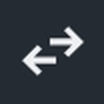
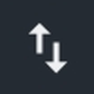
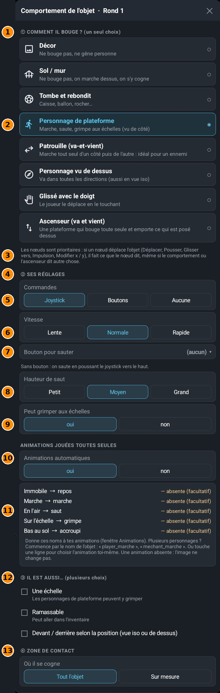

このウィンドウは、オブジェクトがゲームの中でどう動くかを決めます。インスペクターの オブジェクトのふるまい ボタンで開きます。これまで手でやっていた多くの設定のかわりになります。
8 つの動き方
選べるのは1 つだけです。それぞれの選択肢を、エンジンの説明文と一緒に紹介します：
- かざり
動かない、じゃましない。動かさない背景、絵、テキスト用。 - 地面 / かべ
動かない：上を歩ける、ぶつかる。地面、壁、動かない足場用。 - 落ちてはずむ
箱、ボール、岩…重力を受けて、地面ではね返ります。 - アクションゲームのキャラ
歩く、ジャンプ、はしごをのぼる（横から見た画面）。ジョイスティックやボタンで操作します。 
パトロール（行ったり来たり）
ひとりで行ったり来たり：敵にぴったり。地面のはしや壁で引き返します。- 上から見たキャラ
どの方向にも進む（アイソメも）。4 方向に動けます。アイソメ視点にもできます。 - 指でドラッグ
プレイヤーがさわって動かす。プレイヤーが持ち上げて、好きな所に置けます。 
エレベーター（行ったり来たり）
ひとりで動いて、上にのったものを運ぶ足場。向き、きょり、ポーズ（止まる時間）を設定できます。
ウィンドウをひと目で

- 1どう動く？（1つ選ぶ）：これがオブジェクトの動き方です。
- 2選んでいるものは青で、塗りつぶした丸がつきます。ほかをタップすると変わります。
- 3ノードについての注意：ノードが優先されます。ノードがオブジェクトを動かす（移動、押す、すべらせるなど）ときは、動き方の設定と違っていても、ノードの言うとおりになります。
- 4せってい：この部分は、上で選んだものによって変わります。ここはプラットフォームのキャラの設定です。
- 5そうさ：プレイヤーがどう操作するか。ジョイスティック、ボタン（左、右など）、または なし（ノードで動かす：敵や、プレイヤーではないキャラ）。
- 6はやさ：おそい、ふつう、はやい。
- 7ジャンプボタン：ゲーム内のボタンを選びます。ボタンがないときは、ジョイスティックを上に倒すとジャンプします。
- 8ジャンプの高さ：ひくい、ふつう、たかい。
- 9はしごをのぼれる：はい か いいえ。シーンに「はしご」のオブジェクトが必要です。
- 10自動アニメーション：はい にすると、オブジェクトがしていることに合わせて、画像が自動で変わります。
- 11状態の一覧：オブジェクトの各状態（止まっている、歩く、空中、はしごの上、地面で下）と、期待されるアニメーション名（待機、歩く、ジャンプ、のぼる、しゃがむ）。「— なし（なくてもよい）」は、その名前のアニメーションがまだないという意味で、画像は変わりません。アニメーションにこの名前をつけてください（アニメーションウィンドウ）。キャラが複数のときは、オブジェクト名から始めます（たとえば player_marche）。行をタップすると、アニメーションを自分で選べます。
- 12ほかにも…（いくつでも）：はしご（プラットフォームのキャラが登れる）、拾える（持ち物に入れられる）、「位置で前後が決まる」（上から見る視点やアイソメ用）。
- 13あたりはんてい：ぶつかる場所：オブジェクト全体 か カスタム。「自分で決める」場合は、オブジェクトのハンドルか、インスペクターの「当たり判定」でエリアを調整します。